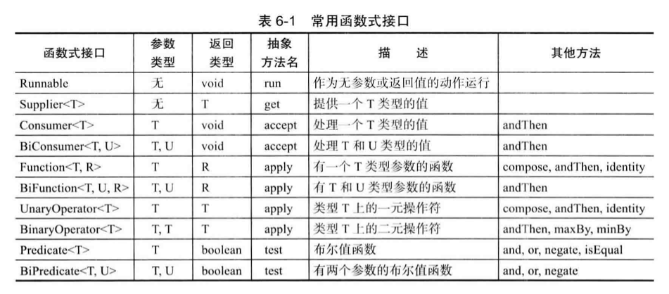
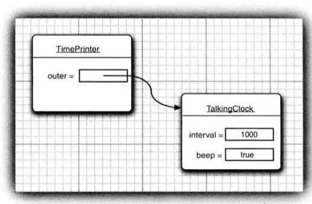

6.1 接口
接口（interface）用来描述类具有什么功能，而并不给出每个功能的具体实现。一个类可以实现（implement）一个或多个接口，并在需要接口的地方随时使用实现了相应接口的对象。
6.1.1 接口概念
接口不是类，而是对类的一组需求描述，这些类要遵从接口描述的统一格式进行定义。
例如，Arrays类的sort方法可以对对象数组进行排序，但是要求对象所属的类必须实现Comparable接口。
public interface Comparable<T>{
int compareTo(T other);
}- 接口中的所有方法自动属于public，因此接口中声明方法不必提供public关键字。
- 接口可以包含一个或多个方法。
- 接口中可以定义常量，但是不能定义实例域，Java SE 8之前也不能在接口中实现方法。
- 提供实例域和方法实现的任务由实现接口的那个类完成，接口类似没有实例域的抽象类，但有一定区别。
这个接口的附加要求是：调用x.compareTo(y)时，这个方法比较两个对象的内容并返回比较结果：x小于y，返回一个负数；x等于y，返回0；x大于y，返回正数。
实现接口的步骤包括：
- 将类声明为实现给定接口。
- 对接口中的所有方法进行定义。
class Employee implements Comparable<Employee>{
public int compareTo(Employee other){
return Double.compare(salary, other.salary);
}
...
}注意：在接口声明中说不必将方法声明为public，但是实现接口时必须声明。
6.1.2 接口的 特性
- 接口不是类，不能使用new运算符实例化一个接口：
x = new Comparable(...); - 可以声明接口的变量：
Comparable x; - 接口变量必须引用实现了接口的类对象：
x = new Employee(...); - 可以使用instanceof检查一个对象是否实现了某个特定接口：
if(anObject instanceof Comparable) - 接口可以通过继承实现扩展。
- 接口中不能包含实例域或静态方法，可以包含常量，将被自动设定为public static final：
double SPEED_LIMIT = 95 - 有些接口只定义了常量而没有定义方法，不常见。
- 每个类只能够拥有一个超类，但是可以实现多个接口，使用逗号分隔：
class Employee implements Cloneable, Comparable
6.1.3 接口与抽象类
抽象类表示通用属性存在的问题：每个类只能扩展一个类。
C++允许一个类拥有多个超类，即多重继承（multiple inheritance），但是Java并不支持。
6.1.4 静态方法
Java SE 8即之后允许在接口中增加静态方法，这合法但是有违接口作为抽象规范的初衷。因为静态方法没有隐式参数，不操作实例域，因此接口中可以实现静态方法。
通常的做法是将静态方法放在伴随类中，比如Java标准库中接口和实用工具类如Collection/Collections或Path/Paths。
6.1.5 默认方法
可以为接口方法提供一个默认实现，必须用default标记。
public interface Comparable<T>{
default int compareTo(T other){return 0;};
}大多数情况这并没有太大用处，因为每一个实现它的类都会覆盖这个方法。
接口方法可以调用其他任何方法。例如：
public interface Collection{
int size(); // An abstract method
default boolean isEmpty(){
return size() == 0;
}
}这样实现Collection接口时就不用实现一遍isEmpty方法了。
6.1.6 解决默认方法冲突
对于先在一个接口中将一个方法定义为默认方法，然后又在超类或另一个接口中定义了同样的方法时：
- 超类优先：如果超类提供了一个具体方法，同名且有相同参数类型的默认方法会被忽略。
- 接口冲突：如果一个超接口提供了一个默认方法，另一个接口提供了一个同名且参数类型（不论是否是默认参数）相同的方法，必须覆盖这个方法来解决冲突。
6.2 接口示例
6.2.1 回调
回调（callback）是一种常见的程序设计模式，在这种模式中，可以指出某个特定事件发生时应该采取的动作。例如，指出按下鼠标或某个菜单项时应该采取什么行动。
6.2.2 Comparator接口
对一个对象数组排序，前提是这些对象是实现了Comparable接口的类的示例。例如，String类实现了Comparable<String>，所以String.compareTo方法可以按字典顺序比较字符串。
现在要求：按长度递增的顺序对字符换进行排序。肯定不能让String类用两种不同方式实现compareTo方法。
对于这种情况，Arrays.sort方法还有一个版本，参数有两个：一个数组和一个比较器（comparator）。其中比较器是实现了Comparator接口的类的实例。
public interface Comparable<T>{
int compare(T first, T second);
}
class LengthComparator implements Comparator<String>{
public int compare(String first, String second){
return first.length() - second.length();
}
}
Comparator<String> comp = new LengthComparator();
if(comp.compare(words[i], words[j]) > 0)...
String[] friends = {"Peter", "Paul", "Mary"};
Arrays.sort(friends, new LengthComparator());6.2.3 对象克隆
（略）
6.3 lambda表达式
6.3.1 为什么引入lambda表达式
lambda表达式是一个可传递的代码块，可以在以后执行一次或多次。
在其他语言中可以直接处理代码块，但是Java不能直接传递代码段，必须构造一个对象，这个对象的类需要有一个方法能包含所需的代码。
6.3.2 lambda表达式的语法
lambda表达式就是一个代码块以及必须传入代码的变量规范。
参数、箭头、表达式：
(String first, String second)
-> first.length() - second.length()如果代码计算无法用一个表达式完成，参数、箭头、代码块：
(String first, String second) ->
{
if(first.length() < second.length()) return -1;
else if(first.length() > second.length()) return 1;
else return 0;
}即使没有参数，仍要提供空括号（类似无参数方法）：
() - > {for(int i=100; i>=0; i--) System.out.println(i);}
如果可以推导出一个lambda表达式的参数类型，可以不显式写出参数类型：
Comparator<String> comp
= (first, second)
-> first.length() - second.length();如果只有一个参数且这个参数类型可以被推导，可以省略括号：
ActionListener listener = event
-> System.out.println("The time is " + new Date());无需指定lambda表达式的返回类型，返回类型总会由上下文推导得出。
注意：lambda表达式有返回值时，一定要在每一个分支都有返回值！下面的表达式就是不合法的：
(int x) -> {if(x>=0) return 1;}
6.3.3 函数式接口
对于只有一个抽象方法的接口，需要这种接口的对象时可以提供一个lambda表达式。这种接口称为函数式接口（functional interface）。
比如Comparator接口就是只有一个方法的接口：
Arrays.sort(words, (first, second) -> first.length() - second.length());
在底层，Arrays.sort方法会接收实现了Comparator<String>的某个类的对象，在这个对象上调用compare方法，然后就会执行这个lambda表达式。
6.3.4 方法引用
当可能已有现成方法可以完成想要传递到代码的某个动作时，当然可以使用lambda表达式：
Timer t = new Timer(1000, event -> System.out.println(event));
更好的做法是直接把println方法传递到Timer构造器：
Timer t = new Timer(1000, System.out::println);
System.out::println就是一个方法引用（method reference），等价于之前的lambda表达式x -> System.out.println(x))。
比如不考虑字母大小写对字符串排序：
Arrays.sort(strings, String::compareToIgnoreCase)
操作符::分隔方法名与对象或类名：
- object::instanceMethod
- Class::staticMethod
- Class::instanceMethod
前2种情况时方法引用等价于提供方法参数的lambda表达式。
第3种情况中，第1个参数会成为方法的目标。例如：String::compareToIgnoreCase等价于(x, y) -> x.compareToIgnoreCase(y)。
方法引用中也可以使用this和super参数来引用当前类或超类的方法。
6.3.5 构造器引用
构造器引用与方法引用类似，方法名为new。例如Person::new是Person类的构造器，具体使用哪一个由上下文决定。
6.3.6 变量作用域
lambda表达式有3个部分：
- 一个代码块；
- 参数；
- 自由变量的值，指非参数而且不在代码块中定义的变量。
lambda表达式可以捕获外围作用域中变量的值：
public static void repeatMessage(String text, int delay){
ActionListener listener = event ->
{
System.out.println(text);
Tooklit.getDefaultTooklit().beep();
};
new Timer(delay, listener).start();
}
repeatMessage("Hello", 1000); // print hello every 1000 milliseconds这里的lambda表达式有1个自由变量text。
在lambda表达式中，只能引用值不会改变的变量：
public static void repeatMessage(String text, int delay){
ActionListener listener = event ->
{
start--; // Error, can't mutate captured variable
Tooklit.getDefaultTooklit().beep();
};
new Timer(delay, listener).start();
}在lambda表达式中也不能引用在外部改变的变量：
public static void repeat(String text, int count){
for(int i = 1; i <= count; i++){
ActionListener listener = event ->
{
System.out.println(i + ":" + text);
// Error, can't refer to changing i
};
new Timer(delay, listener).start();
}
}即：lambda表达式中捕获的变量必须实际上是最终变量（effectively final）。最终变量指的是初始化之后不会再被赋新值的变量。
lambda表达式与嵌套代码块拥有相同的作用域，在lambda表达式不能声明与一个局部变量同名的参数或局部变量。lambda表达式中也不能有同名的局部变量。
在lambda表达式中使用this关键字时，指的是创建这个lambda表达式的方法的this参数：
public class Application(){
public void init(){
ActionListener listener = event ->
{
System.out.println(this.toString());
...
};
...
}
}这里this.toString()调用的是Application对象的toString方法，而不是ActionListener实例的方法。
6.3.7 处理lambda表达式
使用lambda表达式的重点是延迟执行（deferred execution），延迟执行的原因可能是：
- 在一个单独的线程中运行代码；
- 多次运行代码；
- 在算法的适当位置运行代码；
- 发生某种情况时执行代码；
- 只有必要时才运行代码。
例如，要重复一个动作n次：
repeat(10, () -> System.out.println("Hello World!"));
public static void repeat(int n, Runnable action){
for(int i=0; i<n; i++) action.run();
}这里的Runnable接口是接受repeat中lambda表达式的函数式接口，调用action.run()时会执行这个lambda表达式的主体。

6.4 内部类
内部类（inner class）是定义在另一个类中的类。使用内部类的原因有：
内部类方法可以访问该类定义所在的作用域中的数据，包括私有数据。
内部类可以对同一个包重的其他类隐藏起来。
匿名（anonymous）内部类可以方便定义一个回调函数。
6.4.1 使用内部类访问对象状态
TalkingClock类中，构造一个语音时钟需要提供两个参数：发布通告的间隔和开关铃声的标志。
public class TalkingClock{ private int interval; private boolean beep; public TalkingClock(int interval, boolean beep){...} public void start(){...} // inner class public class TimerPrinter implements ActionListener{ public void actionPerformed(ActionEvent event){ System.out.println("At the tone, the time is " + new Date()); if(beep) Tooklit.getDefaultTooklit().beep(); } } }
TimePrinter是一个内部类，但是并不意味每个TalkingClock都有一个TimePrinter的实例域，TimePrinter对象由TalkingClock类的方法构造。
内部类既可以访问自身的数据域，也可以访问创建它的外围类对象的数据域。
内部类的对象总有一个隐式引用，指向创建它的外部类对象。

外围类的引用在构造器中设置，编译器修改了所有内部类的构造器，添加了一个外围类引用的参数，比如在上面的代码中编译器会自动为TimerPrinter类定义构造器。
6.4.2 内部类的特殊语法规则
可以显式地表示外围类引用：OuterClass.this
例如TimePrinter的方法可以写为：if(TalkingClock.this.beep)
可以更加明确编写内部对象的构造器：outerObject.new InnerClass(construction parameters)
例如：ActionListener = this.new TimePrinter();
在外围类的作用域之外，也可以引用内部类：OuterClass.InnerClass
6.4.3 内部类是否有用、必要和安全
（略）
6.4.4 局部内部类
不使用public或private声明的内部类称为局部内部类。它的作用域限定在声明这个局部类的代码块。
局部类的优势在于对外部世界的完全隐藏，外围类的其他代码块也不能访问局部内部类。
6.4.5 由外部方法访问变量
局部类不仅能够访问包含它们的外部类，还可以访问局部变量，但能够被访问的这些局部变量必须是final，即一旦赋值便不可被改变。
6.4.6 匿名内部类
对于局部内部类，如果只需要创建这个类的一个对象，那么这个类就不需要命名，这样的类称为匿名内部类（anonymous inner class）。
public void start(int interval, boolean beep){
ActionListener listener = new ActionListener(){
public void actionPerformed(ActionEvent event){
System.out.println("At the tone, the time is " + new Date());
if(beep) Tooklit.getDefaultTooklit().beep();
}
};
Timer t = new Timer(interval, listener);
t.start();
}代码的意思是创建了一个实现ActionListener接口的类的新对象，需要实现的方法定义在大括号内。
匿名内部类的通常语法格式为：
new SuperType(construction parameters){inner class methods and data}
其中SuperType可以是接口，内部类就要实现这个接口，也可以一个类，内部类就要扩展这个类。
构造器的名字必须与类名相同，匿名类没有类名，所以匿名类不能有构造器。取而代之的是，将构造器参数传递给超类（superclass）构造器。内部类实现接口时不能有任何构造参数。
new InterfaceType(){methods and data}
6.4.7 静态内部类
当内部类声明为static时，可以取消产生的对外围类的引用。静态内部类只是隐藏在了另一个类的内部，而并不需要引用外围类对象。
6.5 代理
（略）